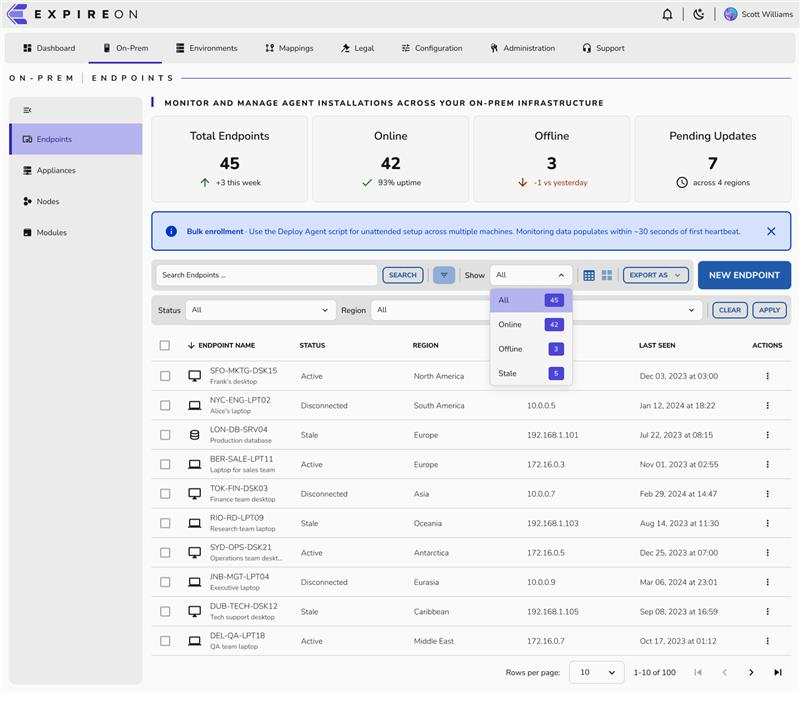

Top-Nav verworfen.
Patterns bleiben auf dem Tisch.
Entscheidung aus dem ABP/Angular-Constraint: Top-Nav ist verworfen — der bestehende Stack macht das schwierig genug, um nicht dorthin zu gehen. Damit fallen die architektonischen Mocks weg, aber die Pattern-Updates (Always-On-Filter, Mega-KPIs, Caps-Eyebrow, Rows-per-page, Status als Text) stehen weiter zur Debatte. Hier die bereinigte Diskussion.
Direkt nebeneinander
Endpoints-Screen · gleicher Inhalt, andere Shell
Die 12 Unterschiede
priorisiert nach Architektur-ImpactTop-Nav primär
Verworfen — ABP/Angular-Stack macht das zu aufwendig.
Linke Mega-Sidenav
Bleibt: 240 px, 3-Ebenen-Accordion.
Section-Strip statt Breadcrumb
Schmaler Strip oben im Canvas: ON-PREM | ENDPOINTS in Caps mit Trenner. Funktioniert auch ohne Top-Nav — wir können das oberhalb des Page-Headers platzieren.
Breadcrumb im Canvas
Home › OnPrem › Endpoints klassisch, mit Chevron-Trennern.
Sub-Nav: Full-Pill aktiv
Aktives Item bekommt volles, gerundetes Background-Fill in Soft-Purple. Wirkt schwerer und klarer.
3-px Left-Accent-Bar
Aktives Item: 3 px-Streifen links + Soft-Purple-BG. Kommt aus den offiziellen Nimbus-Docs.
Keine H1 — Caps-Eyebrow
Statt „Endpoints" als großes H1: MONITOR AND MANAGE AGENT INSTALLATIONS… in Caps. Der Titel kommt aus dem Section-Strip.
Großes H1 + Lead
„Endpoints" als 28 px H1, darunter ein normaler Lead-Paragraph.
KPI: Label oben, Mega-Zahl
Label oben („Total Endpoints"), darunter die große Zahl (~48 px), darunter der Delta-Indikator. Mehr Padding, mehr Luft.
Label oben, Zahl unten
Reihenfolge gleich, aber kompakter — Zahl ist 1.625 rem, weniger Padding pro Card.
Toolbar: Filter immer sichtbar
Search + SEARCH-Button + Filter-Icon · Show: All ▼ · View-Toggle · EXPORT AS ▼ · NEW ENDPOINT. Darunter Status/Region-Selects + Clear/Apply permanent.
Filters-Toggle (collapsed)
Search + Filter-Chips · Filters-Button öffnet eine Panel-Zeile. Dropdowns sind nur sichtbar wenn explizit geöffnet.
Status als gefärbter Text
„Active" (grün), „Disconnected" (rot/grau), „Stale" (orange) — plain colored text ohne Pill / Dot.
Status als badge-dot
badge badge-dot badge-success — Pill mit kleinem Dot davor, alle Nimbus-Komponenten.
Pagination: Rows-per-page
Rows per page: [10 ▼] + 1–10 of 100 + first/prev/next/last. Keine nummerierten Seiten.
Numbered Pagination
First/Prev + 1 2 3 … + Next/Last mit aktivem Seitenindex. Selection-Info auf der linken Seite.
View-Toggle: Table / Card
Zwei Icons (Liste / Kachel-Grid) im Toolbar — wechselt Datatable und Card-Grid im selben Screen.
Density/Columns
Icon-Buttons für Density & Column-Visibility (noch ohne Card-Grid-Modus).
Export-Dropdown
EXPORT AS ▼ mit Format-Auswahl (CSV/Excel/PDF). Explizit, nicht versteckt.
Single Export-Button
„Export" als secondary Button neben Primary-Action — ohne Format-Auswahl.
Theme-Toggle in Top-Bar
Sonne/Mond-Icon neben Notifications oben rechts. Hinweis: Dark-Mode wird offensichtlich vorgesehen.
Kein Theme-Toggle
Light-only. Nimbus liefert aber bereits dark.css + [data-cnds-theme="dark"].
Sub-Nav: nur 4 Items
Mit Top-Nav verworfen — wir behalten die 3-Ebenen-Sidenav.
Nimbus-Sidenav: 3 Ebenen
Bleibt: Top-Level → Sektion → Sub-Sektion für alle 40 Screens.
Meine Einschätzung
Mit der Top-Nav-Frage geklärt: die Pattern-Liste ist sehr stark.
Was bleibt, sind im Wesentlichen Density- und Hierarchie-Updates — kein architektonisches Risiko, sondern Polish. Always-On-Filter, größere KPIs, Status als Text, Caps-Eyebrow, Rows-per-page. Alles davon können wir ohne Sidenav anzufassen in expireon-app.css einbauen.
Zwei Patterns davon haben echte UX-Implikationen (Always-On-Filter, Status-Text); die anderen sind reines Visual-Tuning. Lass uns Q2–Q5 unten durchgehen.
Neun Entscheidungen, die wir treffen müssen
je früher, desto weniger Rework · Q1 verworfenQ1 Shell-Architektur · verworfen
Sidenav bleibt. ABP/Angular macht Top-Nav-Umbau zu aufwendig. Wir behalten die 240 px-Sidenav mit 3-Ebenen-Accordion.
Q2 Toolbar-Filter: Always-On oder Collapsible?
Designer zeigt Status/Region-Selects permanent unter der Suche. Mein P1 hat sie hinter einem „Filters"-Button.
Direkter Zugriff. Mehr vertikaler Platz, aber Power-User-freundlich.
Mein VorschlagCleaner default state. Erfordert einen Click bevor man filtern kann.
Q3 Status-Indikator: Badge mit Dot oder gefärbter Text?
Designer macht es ohne Pill, nur farbiger Text. Spart visuelle Last, verliert aber etwas „Affordance".
Cleaner. Status sieht weniger wie „etwas das man klicken kann" aus.
Dot + Text ohne Pill-Background. Beste Lesbarkeit + minimaler Footprint.
Mein VorschlagVolle Pills mit Dot. Klarste Status-Markierung, aber visuell „lauter".
Q4 Section-Strip statt Breadcrumb?
Statt „Home › OnPrem › Endpoints" zeigt der Designer einen schmalen Strip mit ON-PREM | ENDPOINTS in Caps. Funktioniert auch innerhalb unserer Sidenav-Welt.
Cleaner, premium-er Look. Aber: keine Klick-Pfade zurück zu Eltern-Ebenen.
Caps-Strip oben (visuell), Breadcrumb-Pfad-Funktionalität in der Sidenav-Hierarchie. Sektion ist immer offen sichtbar.
Mein VorschlagFunktional klar, vertraut. Wirkt weniger „designed".
Q5 Page-Headline: H1 oder Caps-Eyebrow?
Designer ersetzt „Endpoints" als großes H1 durch MONITOR AND MANAGE AGENT INSTALLATIONS… in Caps. Premium, aber keine starke Page-Marker mehr.
1:1 Designer. Sehr premium, aber Page-Identität schwächer.
Section-Strip oben (Pos.), H1 mittig groß, Lead als Untertitel. Drei Hierarchie-Ebenen sauber.
Mein VorschlagKlassisch, klar. Weniger „SaaS-pro".
Q6 KPI-Cards: Mega-Zahl oder kompakt?
Designer macht die Zahl ~48 px, deutlich mehr Padding, Delta-Indikator als Icon-Text-Kombi mittig.
Sehr starker visueller Anker. Auf KPI-Screens (Endpoints, Users, Audit Logs) ein klares „Gibt's was zu sehen?".
Mein VorschlagSpart Vertikal-Raum, lässt die Tabelle näher rücken.
Q7 Pagination: Numbered oder Rows-per-page?
Designer: Rows per page: [10 ▼] + 1–10 of 100 + first/prev/next/last. Mein P1: nummerierte Seiten 1/2/3/…
Premium. Aber: kein direkter Seitensprung zu „Seite 7".
Rows-per-page + Range-Anzeige + Arrows + zusätzlich nummerierte Seiten (max. 5 sichtbar mit Ellipsis). Beste aus beiden Welten.
Mein VorschlagSchnellste Navigation bei vielen Seiten.
Q8 View-Toggle: Table vs. Card?
Designer zeigt zwei Icon-Buttons im Toolbar — Liste/Card-Grid umschaltbar im selben Screen. Wichtig für die P2-Familie (Custodians, Modules, Languages).
Klar: P2-Familie kommt als nächstes. Toggle jetzt einplanen, dann ist's später nur Markup.
Mein VorschlagP1 puristisch als Tabelle, Toggle nur dort wo es eine Karten-View gibt.
Q9 Export: Single oder „Export as ▼"?
Designer-Dropdown mit Format-Auswahl (CSV/Excel/PDF). Mein P1: einzelner „Export"-Button.
Format-Auswahl ist tatsächlich relevant — Audit-Exports oft als CSV, Reports als PDF.
Mein VorschlagFormat könnte in einem Modal nach Klick gewählt werden.
Q10 Dark-Mode jetzt vorsehen?
Designer zeigt ein Sonne/Mond-Toggle in der Top-Bar — Nimbus liefert dark.css bereits.
Toggle in TopNav, Persistenz via localStorage. ~1h Aufwand für die Shell, dann automatisch global.
Erst die finale Pattern-Sprache stabilisieren, dann Dark-Mode in einem Sweep. Verhindert doppeltes Visual-Tuning.
Mein VorschlagWas Du den Designer noch fragen kannst
- Card-Grid-View neben Datatable — gibt's einen Mockup, wie das für Custodians, Modules, Languages aussieht? Das ist genau die P2-Familie, die als Nächstes kommt.
- „Search"-Button neben dem Suchfeld — Pflicht oder fühlt sich Live-Filterung beim Tippen für ihn auch ok an? Sein Mockup zeigt explizit einen „SEARCH"-Button — ungewöhnlich heute.
- Caps-Eyebrow statt H1 — meint er das als globalen Standard oder nur als Endpoints-Highlight?
- Status als gefärbter Text — ohne Dot/Pill verliert man visuelle Affordance. Hat er das bewusst so gewählt, oder ist es ein „cleaner first draft"?
- Mockups für tiefe Screens — Custodians (Ebene 3) oder Settings (Forms) gestaltet er auch so?
Vorgeschlagene nächste Schritte
- Du entscheidest Q2–Q10 (Filter · Status · Section-Strip · Headline · KPI · Pagination · View-Toggle · Export · Dark-Mode).
- Ich baue eine einzelne Pilot-Variante 2 nach Deiner Entscheidung — wieder Endpoints, damit Du es direkt mit dem aktuellen P1 und dem Designer-Mockup vergleichen kannst.
- Wenn die Pilot-Variante 2 sitzt, rollen wir die Patterns automatisch über alle 11 Datatable-Screens — denn alle bauen auf
_shared/expireon-app.cssund der gemeinsamen Sidenav/Topnav. Eine Änderung im CSS = 11 Screens aktualisiert. - Dann erst P2 (Karten-Familie) — mit dem dann finalen Pattern-Set.
Tipp: Falls Du den Designer fragst und er sagt „1:1 wie im Mockup" — dann brauchen wir einen weiteren Mockup für einen Ebene-3-Screen (Custodians) bevor wir die Shell umbauen. Sonst raten wir.